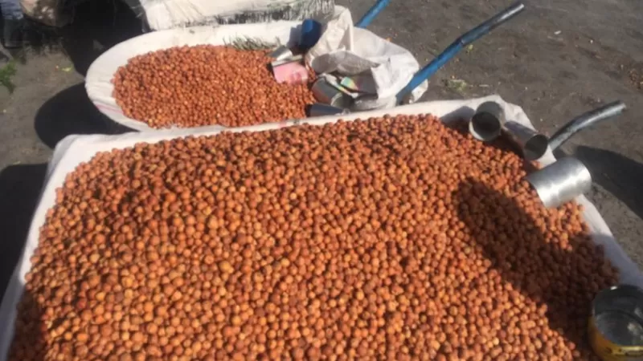
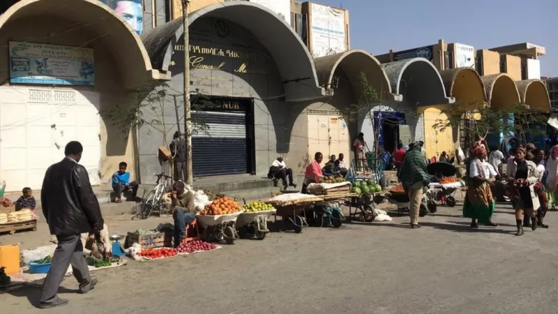
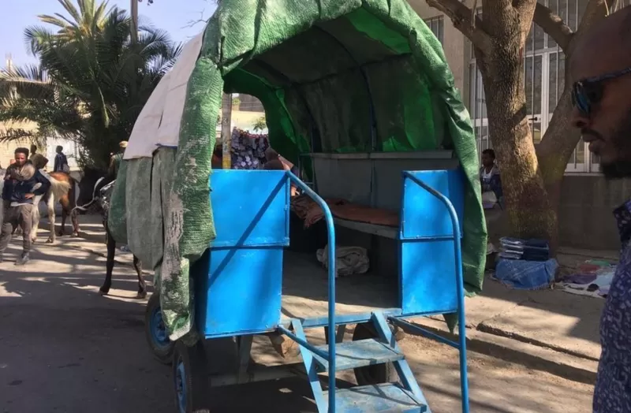

በጦርነቱ ምክንያት ከአለም ተቆራርጣ ባለችው መቀለ ኑሮ ምን ይመስላል?
21 ሚያዝያ 2022

ከሰሞኑ በኢትዮጵያ የታወጀው የሰብዓዊ ተኩስ አቁም ስምምነት በትግራይ ክልል እርዳታ እንዲገባና ለ17 ወራት ያህል የዘለቀው የእርስ በርስ ጦርነት እልባት ሊያገኝ ይችላል የሚል ተስፋን ጭሯል።
የትግራይ ክልል ለበርካታ ወራት ቴሌኮምን ጨምሮ መሰረታዊ የሚባሉ አገልግሎቶች የተቋረጡባት ሲሆን ይህም ሁኔታ በሚሊዮን የሚቆጠሩ ሰዎች ምግብና አስፈላጊ አቅርቦቶችን እንዳያገኙ አድርጓቸዋል። በህወሃት ስር በምትገኘው የትግራይ ክልል መዲና መቀለ ነዋሪ የሆኑ ግለሰብ መሰረታዊ አገልግሎቶች በሌሉበት ሁኔታ ህይወት ምን እንደምትመስል ለቢቢሲ ተናግረዋል። በየቀኑ በህይወት ለመኖር የሚያስፈልጉ መሰረታዊ ነገሮችን ማግኘት ከፍተኛ ጭንቀት አለው። የሁለት ትንንሽ ልጆች አባት እንደመሆኔ ለቤተሰቤ የሚያስፈልገውን ሁሉ አለማሟላቴ ልቤን ሰብሮታል። ባንኮች ስለተዘጉ ያለኝን ገንዘብ አውጥቼ መጠቀም ባለመቻሌ ምንም ማድረግ አልቻልኩም። እኔ ብቻ ሳልሆን በርካታ ነዋሪዎች ይህንኑ ፈተና እየተጋፈጡ ነው። ከፍተኛ የገንዘብ እጥረትም አለ። ከባለፈው ዓመት ሰኔ ወር ጀምሮ አካውንቴ ውስጥ ያለውን ገንዘብ ማውጣት ባለመቻሌ ከጓደኞች እና ዘመዶች ብር እየተበደርኩ ለቤተሰቤ ምግብ ለመግዛት ተገድጃለሁ።
- ጄኔራል ፃድቃን፡ ከትግራይ ኃይሎች ጀርባ ያለው ሞተር
- "ሰዓረ ሙዚቃ በጣም ያዝናናው ነበር" ጄኔራል ፃድቃን ገብረ ትንሳዔ
- ከሬዲዮ ሞገድ አፈና እስከ ርዕሰ መስተዳድር፡ ደብረጽዮን ገብረሚካኤል ማናቸው?
በውጭ ሃገር ያሉ ዘመዶቻችን መርዳት ቢፈልጉም የቴሌኮም አገልግሎቶች ስልክና ኢንተርኔት በመቋረጣቸው ይህንንም እርዳታ ልናገኝ አልቻልንም። ይባስ ብሎ የምግብ ዋጋ በከፍተኛ ሁኔታ ንሯል። ዋነኛ ምግብ የሆነውን ጤፍ፣ የስንዴ ዱቄት፣ በርበሬና ዘይት ዋጋ የማይቀመስ ሆኗል። ከአመት በፊት 100 ኪሎግራም ጤፍ ወደ 4 ሺህ 200 ብር ገደማ ይሸጥ ነበር፤ በአሁኑ ወቅት ግን 7 ሺህ 600 ብር እየተሸጠ ነው። አቅሙ ያላቸው አነስተኛ መጠን ያለው ጤፍ ገዝተው ከማሽላና ስንዴ ዱቁት ጋር በመቀላቀል እንጀራ ይጋግራሉ። ሆኖም ለበርካታ ነዋሪዎች ጤፍ መግዛት የማይታሰብ ነው።
በየግቢያችን አትክልት እንድንተክል ተነግሮን እነሱንን እየኮተኮትንና እያሳደግን ነበር። ችግሩ ግን ውሃ ማግኘት አልቻልንም። ቀደም ብሎ ለሳምንት የሚሆን 200 ሊትር የሚይዘውን በርሜል እንገዛ ነበር በአሁኑ ወቅት ግን እሱን ለመግዛት አቅሙ የለንም። ስለዚህ ውሃ የምናመጣው ጥልቀት ከሌላቸው ጉድጓዶች እየቀዳን ነው። ለልጆች አዲስ ጫማ፣ ልብስ መግዛት እና ስጋ መብላት ቅንጦት ሆኗል። በመቀለ የውሃ እና የመብራት አገልግሎት የተገደበ ነው፤ ቀኑን ሙሉ ሲመጣና ሲጠፋ ነው የሚውለው። አንዳንድ ጊዜም ያው መብራት ሳናገኝ ቀናቶችን እናስቆጥራለን። በርካታ ነዋሪ እየሰራ አይደለም፤ ከስራ ውጭ ሆኗል። በርካታ ሱቆችና የንግድ ማዕከላትም ኪራይ መክፈል ባለመቻላቸው ወይም የሚሸጡት እቃዎች በማጣታቸው ተዘግተዋል።
እነዚህን መከራዎች ለመወጣት ነዋሪዎች እንደ መኪና፣ የቤት እቃዎች እና ጌጣጌጦችን በኪሳራ ለመሸጥ ተገድደዋል። በአንድ ወቅት 3 ሺህ 295 ብር ያወጣ የነበረ ባለ 21 ካራት የወርቅ ቀለበት በአሁኑ ወቅት ዋጋው ወርዶ በ700 ብር ይሸጣል። ከ800 ሺህ ብር በላይ ይሸጥ የነበረ መኪና ደግሞ 300 ሺህ ብር ሲሸጥ እያየን ነው። ነዋሪዎች ንብረታቸውን ሸጠው ከጨረሱ በኋላ ወደ ልመና ይገባሉ። በየጎዳናዎቹ በርካታ ለማኞች አሉ፤ ከነዚህ ውስጥ ብዙዎች ልጆች የያዙ እናቶች ናቸው። የጤና ማዕከላትም መድኃኒት እና ሌሎች የህይወት አድን ቁሳቁሶች አልቆባቸዋል። ስር የሰደደ የጤና እክል ያለባቸው ህመምተኞች በመድኃኒት እጦት ምክንያት እየሞቱ ነው። የኤችአይቪ ቫይረስ በደማቸው ያለባቸው ነዋሪዎች ደግሞ የጸረ ኤች አይቪ መድኃኒቶችን የሚያገኙት አንዳንድ ጊዜ ነው። በትግራይ ዘንድ ይከበሩ የነበሩና የማህበረሰቡ መገለጫ የሆኑት ሃይማኖታዊ በዓላት፣ ሰርግና ሌሎች ድግሶች የሩቅ ጊዜ ትዝታ ሆነዋል። በየቀኑ ምን አደርጋለሁ? ትምህርት ቤቶች ከመከፈታቸው በፊት አምሽቼ ነበር የምተኛው። ማታ፣ ማታ መሰብሰብ የቻልኳቸው ዜናዎች በሙሉ አዳምጣለሁ፤ ቪዲዮዎችንም አያለሁ። በቅርብ ቀናት የተከሰቱ ዜናዎችን ማግኘት አስቸጋሪ ነው። የኢንተርኔት አገልግሎት ስለሌለ ይልቁንም ቪዲዮዎችንና በድምፅ የተቀዱ ዜናዎችን የሚሸጡ ሱቆች ጋር እሄዳለሁ። እያንዳንዱን ቅጅ ወደ 10 ብር ገደማ ይሸጡታል። ሌላ ጊዜ ደግሞ መፅሃፎችን አነባለሁ፣ ከጎረቤቶቼ ጋር እጫወታለሁ ወይም በእግሬ እራመዳለሁ።
የማይቀመሰው ነዳጅ
በአሁኑ ወቅት ልጄ ትምህርት ቤት በመከፈቱ ስለተመለሰ እሱን ሳደርስና ስመለስ ረጅም የእግር ጉዞ አደርጋለሁ። በስልኬ ያለው መተግበሪያ እንደሚያሳየኝ በየቀኑ ከ9 ሺህ እስከ 12 ሺህ እርምጃዎችን እራመዳለሁ። ጥዋት ለማድረስ የ2ኪሎሜትር መንገድ በእግሬ እሄዳለሁ። ባለቤቴ ደግሞ በምሳ ሰዓት በእግሯ ሄዳ ታመጣዋለች። ድሮ በመኪና ነበር የምንሄደው ነገር ግን በአሁኑ ወቅት የነዳጁን ዋጋ ስለማንችለው ይኸው መኪናዋም ግቢ ውስጥ ከቆመች አስራስምንት ወራት ተቆጠረ። ነዳጅ ይገኛል ነገር ግን ቀድሞ እንደነበረው በማደያዎች ላይ ሳይሆን በጥቁር ገበያ ነው የሚሸጠው። አንድ ሊትር ቤንዚን ከጦርነቱ በፊት በነዳጅ ማደያዎች 22 ብር ይሸጥ የነበረ ቢሆንም በአሁኑ ወቅት በሊትር 515 ብር እየተሸጠ ይገኛል። በከተማዋ ጋሪዎች ለህዝብ ትራንስፖርት አገልግሎተ ውለዋል።
በርካቶች ብስክሌት መጠቀም ቢጀምሩም ነገር ግን ብስክሌቶች በከፍተኛ ሁኔታ ተወድደዋል። እዚህ ያለው ህዝብ ጦርነቱ በሰላማዊ መንገድ እንዲፈታ ይፈልጋል እናም ባለፈው ሳምንት የተኩስ አቁሙን ስንሰማ በጣም ተደስተን ነበር። ሆኖም መሬት ላይ ባለው ኑሯችን ላይ ምንም አይነት ለውጥ አላመጣም፤ ምንም እንኳን የእርዳታ ጭነት መኪኖች ወደ ክልሉ እየመጡ ነው ቢባልም። ባንኮች ገና አልተከፈቱም አንዳንዶችም ተኩስ አቁም ባዶ ቃል ነበር በሚል እየተበሳጩ ይገኛሉ። በህይወት በመቆየቴና ታሪኬን ለናንተ በማካፈሌ ደስተኛ ነኝ፤ ነገር ግን በአሁኑ ወቅት በርካቶች ከኔ በከፋ ሁኔታ ውስጥ እንዳሉና አንዳንዶቹም እየሞቱም እንደሆነ አውቃለሁ። ምናልባት ከዚህ ሁሉ በጎ ነገር መጠቀስ የሚገባው የህዝቡ እርስ በርስ መደጋገፍና መረዳዳት ነው። "ብቻውን የበላ ብቻውን ይሞታል" የሚል የትግርኛ ቋንቋ አባባል አለ እናም ነዋሪው ይህንን አባባል አጥብቆ ይዟል። ነገ እንደሚራቡ እንኳን ቢያውቁትም ማሀበረሰቡ ያለውን ተካፍሎ ነው የሚበላው። አብረን ለመትረፍም ተባብረን ቆመናል። ለደህንነታቸው ሲባል የነዋሪውን ስም አንጠቅስም።